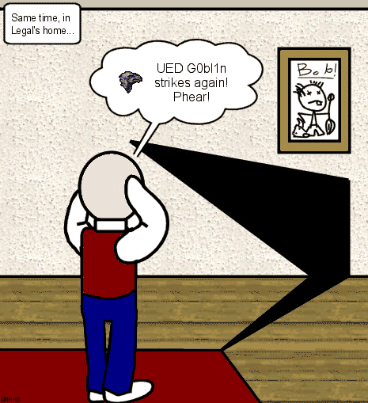
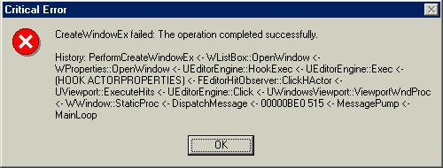

UnrealEd Goblin

|
The UnrealEd Goblin is a mythical entity, invented by the lunatics who populate Beyond Unreal's General Editing forum, and blamed for eveything that goes wrong in UnrealEd...
Of course the UnrealEd Goblin is purely fictional. Really. There's nothing to worry about. And that occasional snickering coming out of the computer case is just the CPU fan. I think. —Mychaeel
![[UnrealEdClippyhelp]](images/unrealedclippyhelp.png) You're soooo glad there's no helpfile for UnrealEd now, aren't you? Go on... |
noooooooo i always thought he was real  — BesigedB
— BesigedB
Of course he is! Who else do you think that it is messing with UT so it thinks you didn't start it up properly after a session with Ued? BTW if anyone meets him can you tell him from me that that joke is getting *really* old  – Zedsquared
– Zedsquared
The UEd goblin is allright as long as you don't place the brushes in his way. If you missplace them he will make a hole in your map, untill you fix it again. He might also make your bots go stupid if you don't place enough of them apples over the map. LegalAssassin
ZxAnPhOrIaN: Also, he crashes the game when you dig or add ground too much on terrain.
![[memeselfandthegoblin]](images/memeselfandthegoblin.gif) Me, meself and teh G0bl1n... |
Discussion
ProjectX: yeh he looooves those apples 
ZxAnPhOrIaN: They look more like peaches with apple leaves!
Nachimir: He also likes to leap from dark nooks at the unwary screaming "GENERAL PROTECTION FAULT!"
Kuhal: I'm unwary because my UnrealEd GPF's upon startup. URender is the class causing the GPF so it's been surmised that it's due to my detanator driver versions. Anyone know which version(s) the goblin is happiest with? I REALLY want to use UED!!
Legal: Just give WinXP, a new fun Geforce 4 4600, and a big phat trout
Jeeptrash: You know, it's the goblin who saves your file automatically for you when you forget... so that you will become careless and forget to save. The goblin has also carved little slots in all my bsp walls so the sunlight leaks into the dark bits.
Wormbo: He not only loves apples, but also resources. He eats so many of 'em that other programs are forced to tell you that there aren't any more of them left.
ZxAnPhOrIaN: 1) yeah, i can only open UnrealEd three times, then it goes tumbling down to 24% free!!
2) He also loves rebuilds, every time you delete or add a brush, and you playtest, he kills you when you respawn!
WheatPuppet: It would seem that we know enough about the UEd goblin that we could make a mod out of it. 'Access nones anyone?
Mosquito: LOL!! I was making a map, and it became over ran with BSP holes, Moving it around did nothing, everything was on grid, so I open up Unreal Wiki to look for some Tips... Then when I minimize... My Level doesn't have anymore BSP holes!! 
tho, lets not jyix it.
ZxAnPhOrIaN: What did you do to fix the BSP holes??
Legal: Zxan, try using the Order> To First/Last if all else fails. What Mosq describes is a bug, makes all holes go away for 5 seconds. If you don't move during these 5 sec's you'll have them again. Just a temp-ban, sorta
mosquito: Legal is right... LYING GOBLIN!!
ZxAnPhOrIaN: Well, i don't have the problem. I hate vague questions! :mad:
Legal: Tarq, where did you get that?
Tarquin: What, the Clippy pic? I wasted time making it yesterday when I had a migraine
ZxAnPhOrIaN: Heeeeeee... Heeeeeeeee... Nice clippy picture. Looks cool, and convincing...
Tarquin: It's not that hard. You need a few screenshots of stuff, and some time with photoshop. Had to do some fonts in MS Paint and copy over, because Photoshop won't do MS Sans Serif because it's not truetype.
MythOpus: Hey! I think i figured out why the goblin kept crashing my UED. In system config (usually in accessories > System Information > Tools >System Configuration Utility (Windows) ), it said my system was only processing the system.ini and so I checked the Windows.ini and now I'm getting much less errors. People who are getting a lot of errors should check if your system is processing both ini's. | If someone can correct me on this , please do so ! I'm not to sure if thats what actually made the errors go away. |
Legal: Thought it was fake. But I just wanted to know if there was any insane helpfiles for d/l 
Phantasmagorium: Hmm... Does he dwell in every version of Ued, or just UT2k3 ones? Course, I sucked at all of em. Always figured it was just me.. but, mebbe twas the goblin..
Daid303: The goblin started in UEd1, and found his way into UEd2 very fast. But he also sneaked into UEd3, but he hides better now.
evil_blue_dude I h8 dat goblin 
Craze: The goblin is crazy, "Function get last error sucessful" thats a GOOD thing!!!!!!!
Darkwarrior: The goblin in my copy of UEd seems to like the 2d shape editor more than anything else. He crashes it whenever I try to extrude a shape that doesnt have a flat bottom.
Wormbo: U.E.D.G.O.B.L.I.N.: Upgraded Electronic Device Generated for Online Battle and Logical Intensive Nullification / U.N.R.E.A.L.E.D.: Upgraded Networked Replicant Engineered for Accurate Learning and Efficient Destruction — any questions?
Mattintosh: EEK! 
Mosquito: WINN!!!

Craze: The goblin has issues, just look at this, whats wrong with u goblin!!!  the goblin is a retard!!!
the goblin is a retard!!!
RJ: The real UED splash screen hehe
()
Ghost3021: heh an i thought i was the only one who's game came with that spash
RJ: ( )
)
Ghost3021: WTF??? my gobby no likey direct3d...and dynamic lighting on at the same time.... 
 or realtime preview....this is UEd2.0 btw... GRRR
or realtime preview....this is UEd2.0 btw... GRRR  whyyy mmeeeeee..they both came right after each orht...
whyyy mmeeeeee..they both came right after each orht...
OlgaB: The UnrealEd Goblin won't let me see placeable actors unless I reload the package browser. :mad:
{X-dArKwUn-X} (dunno how old this page is, or even if im supposed to do this, but i have some advice...) The 10000x10000x10000 cube that my whole world is in got a BSP Hole, I fixed it by placing a 10000x10000x.01 cube right in front of the infected wall, put on 'fake backdrop' and it flawlessly concealed it with the my skybox info.
Mrbiggbrain: i got a weird error that said 'Warning you are attempting to create a 22.3 sided Sphere. the unrealed goblin doesn't like 22.3 or 22.7 sided Spheres. if you add this to your level, he will create a BSP error in your bed and you will continuously respawn for all eternity.' and im wondering if anyone else thought they ahd got this error before